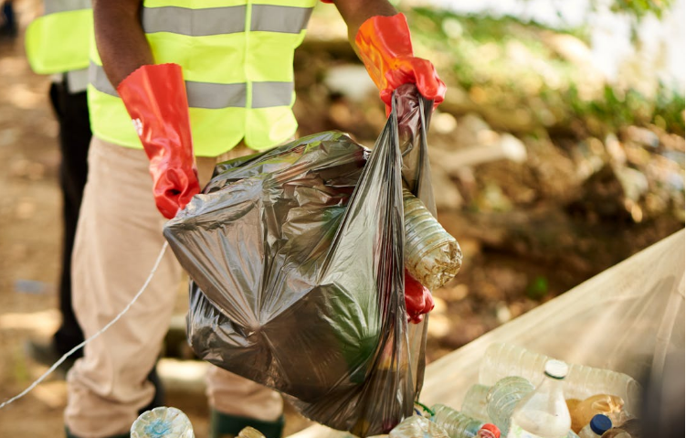

A coleta seletiva é uma prática simples, mas fundamental para a preservação do meio ambiente.
Ao fazer a separação de diferentes materiais como papel, vidro, metal e plástico, contribuímos para que este lixo tenha sua destinação adequada, fazendo com que não chegue a territórios indevidos, como em reservas naturais, ruas, parques e etc.
A partir da reciclagem economizamos recursos naturais e geramos novos produtos a partir de materiais reciclados.
